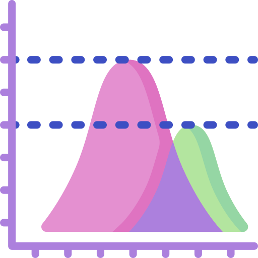
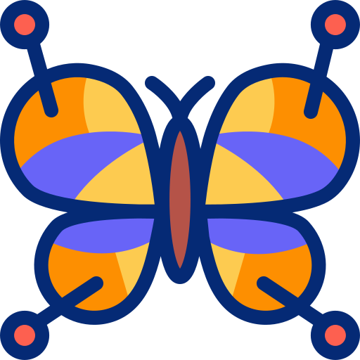
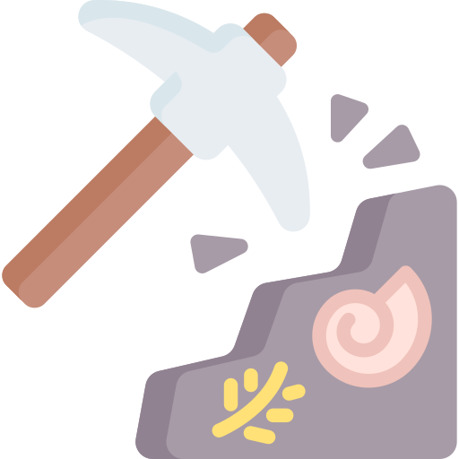
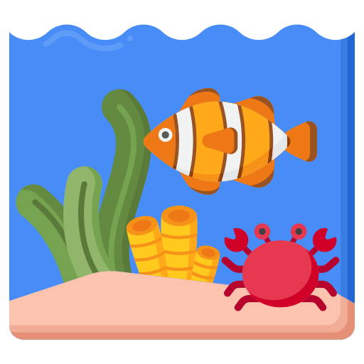

Publications
Some text about my publications hurray
Management of big data & databases

Statistical analysisComputational methods creation

Morphology & morphometrics
Palaeontological specimens & field work
Palaeoecology & fluid dynamicsOpen science principles
Scientific publications
//DONT KNOW WHY THE TABLE LAYOUT HAS DONE THIS BELOW - MAKE INTO NEW TABLE +:————————————————————————————————————————————————————————————————————————————————————————————————————————————–:+———————————————————————————————————————————————————————————————————————————————————————————————————————-+—————————————————————————————+ | | Jones L.A., Dean C.D., Allen B.J., Drage H.B., Gearty, W., Flannery-Sutherland J.T., Chiarenza A.A., Dillon E.M., Farina B.M. & Godoy P.L. Ten simple rules to follow when cleaning occurence data in palaeobiology. BioRxiv preprint, submitted Palaeontology. | online access| +—————————————————————————————————————————————————————————————————————————————————————————————————————————————-+———————————————————————————————————————————————————————————————————————————————————————————————————————-+—————————————————————————————+ | | Drage, H.B., Keating, J.N., Nielsen, M.L., Saleh, F. & Wong Hearing, T.W. 2024. Open Palaeontology: a new model of diamond open access journal for palaeontology. Open Palaeontology* 1:1. | online access | +—————————————————————————————————————————————————————————————————————————————————————————————————————————————-+———————————————————————————————————————————————————————————————————————————————————————————————————————-+—————————————————————————————+ | | Drage, H.B. & Pates, S. 2024. Distinct causes underlie double-peaked trilobite morphological disparity in cephalic shape. Communications Biology 7:1490. | online access | +—————————————————————————————————————————————————————————————————————————————————————————————————————————————-+———————————————————————————————————————————————————————————————————————————————————————————————————————-+—————————————————————————————+ | | Drage, H.B., Pates, S. & Minter, N.J. 2024. Experimental protocol for validation of computational fluid dynamics palaeontological simulations. EcoEvoRxiv preprint. | online access | +—————————————————————————————————————————————————————————————————————————————————————————————————————————————-+———————————————————————————————————————————————————————————————————————————————————————————————————————-+—————————————————————————————+ | | Pates, S. & Drage, H.B. 2024. Hydrodynamic function of genal prolongations in trinucleimorph trilobites revealed by computational fluid dynamics. BioRxiv preprint. | online access | +—————————————————————————————————————————————————————————————————————————————————————————————————————————————-+———————————————————————————————————————————————————————————————————————————————————————————————————————-+—————————————————————————————+ | | Campli, G., Volovych, O., Kim, K., Veldsman, W.P., Drage, H.B., Sheizaf, I., Lynch, S., Chipman, A.D., Daley, A.C., Robinson-Rechavi, M. & Waterhouse, R.M. 2024. The moulting arthropod: a complete genetic toolkit review. Biological Reviews 99:6. | online access | +—————————————————————————————————————————————————————————————————————————————————————————————————————————————-+———————————————————————————————————————————————————————————————————————————————————————————————————————-+—————————————————————————————+ | | Saleh, F., et al. 2024. Reply to: The Cabrières Biota is not a Konservat-Lagerstätte. Nature Ecology & Evolution 8. | online | | | | | | | | PDF | +—————————————————————————————————————————————————————————————————————————————————————————————————————————————-+———————————————————————————————————————————————————————————————————————————————————————————————————————-+—————————————————————————————+ | | Lynch, S., Żylińska, A., Daley, A.C. & Drage, H.B. 2024. Dual role of enrolment for moulting and protection in a Cambrian trilobite from Poland. Lethaia 57:1. | online access | +—————————————————————————————————————————————————————————————————————————————————————————————————————————————-+———————————————————————————————————————————————————————————————————————————————————————————————————————-+—————————————————————————————+ | | Saleh, F., et al. 2024. The Cabrières Biota (France) provides insights into Ordovician polar ecosystems. Nature Ecology & Evolution 8. | online access | +—————————————————————————————————————————————————————————————————————————————————————————————————————————————-+———————————————————————————————————————————————————————————————————————————————————————————————————————-+—————————————————————————————+ | | Drage, H.B. 2024. Trilobite moulting behaviour variability had little association with morphometry. Palaeontologia Electronica 27(1):a9. | online access | | | | | | | | PDF | +—————————————————————————————————————————————————————————————————————————————————————————————————————————————-+———————————————————————————————————————————————————————————————————————————————————————————————————————-+—————————————————————————————+ | | Drage, H.B. & Wong Hearing, T.W. [joint first-authors] 2023. Diamond Open Access with Preregistration: a new publishing model for palaeontology. EarthArXiv preprint. | online access | +—————————————————————————————————————————————————————————————————————————————————————————————————————————————-+———————————————————————————————————————————————————————————————————————————————————————————————————————-+—————————————————————————————+ | | Laibl, L., Gueriau, P., Saleh, F., Pérez-Peris, F., Lustri, L., Drage, H.B., Bath Enright, O.G., Potin, G. & Daley, A.C. 2023. Immature stages of a Lower Ordovician marrellid from Morocco suggest size-induced ontogenetic niche differentiation in early euarthropods. Frontiers in Ecology & Evolution 11. | online access | +—————————————————————————————————————————————————————————————————————————————————————————————————————————————-+———————————————————————————————————————————————————————————————————————————————————————————————————————-+—————————————————————————————+ | | Chipman, A. & Drage, H.B. [joint first-authors] 2023. Trilobites in rock enrol: Commentary on Esteve and Hughes (2023). Proceedings of the Royal Society B 290. | online access | +—————————————————————————————————————————————————————————————————————————————————————————————————————————————-+———————————————————————————————————————————————————————————————————————————————————————————————————————-+—————————————————————————————+ | | Laibl, L., Drage, H.B., Pérez-Peris, F., Schöder, S., Saleh, F. & Daley, A.C. 2023. Babies from the Fezouata: adaptations to high latitudes in the early developmental trilobite stages. Geobios 81. | online access | +—————————————————————————————————————————————————————————————————————————————————————————————————————————————-+———————————————————————————————————————————————————————————————————————————————————————————————————————-+—————————————————————————————+ | | Drage, H.B., Legg, D.A. & Daley, A.C. 2023. Novel marrellomorph moulting behaviour preserved in the Lower Ordovician Fezouata Shale, Morocco. Frontiers in Ecology & Evolution 11. | online access | +—————————————————————————————————————————————————————————————————————————————————————————————————————————————-+———————————————————————————————————————————————————————————————————————————————————————————————————————-+—————————————————————————————+ | | Drage, H.B., Holmes, J.D., García-Bellido, D.C. & Paterson, J.R. 2023. Associations between trilobite intraspecific moulting variability and body proportions: Estaingia bilobata from the Cambrian Emu Bay Shale, Australia. Palaeontology 66. | online access | +—————————————————————————————————————————————————————————————————————————————————————————————————————————————-+———————————————————————————————————————————————————————————————————————————————————————————————————————-+—————————————————————————————+ | | Feldsman, W.P., Campli, G., Dind, S., Rach de la Vale, V., Drage, H.B., Chipman, A.D., Waterhouse, R.M., & Robinson-Rechavi, M. 2022. Taxonbridge: an algorithm for the creation and analysis of custom taxonomies. BioRxiv preprint. | online access | +—————————————————————————————————————————————————————————————————————————————————————————————————————————————-+———————————————————————————————————————————————————————————————————————————————————————————————————————-+—————————————————————————————+ | | Drage, H.B., Vandenbroucke, T., Van Roy, P. & Daley, A.C. 2019. Sequence of post-moult exoskeleton hardening preserved in a trilobite mass moult assemblage from the Lower Ordovician Fezouata Konservat-Lagerstätte, Morocco. Acta Palaeontologica Polonica 64:2. | PDF | +—————————————————————————————————————————————————————————————————————————————————————————————————————————————-+———————————————————————————————————————————————————————————————————————————————————————————————————————-+—————————————————————————————+ | | Drage, H.B. 2019. Quantifying intra- and interspecific variability in trilobite moulting behaviour across the Palaeozoic. Palaeontologia Electronica 22:2. | PDF | +—————————————————————————————————————————————————————————————————————————————————————————————————————————————-+———————————————————————————————————————————————————————————————————————————————————————————————————————-+—————————————————————————————+ | | Yang, J., Ortega-Hernández, J., Drage, H.B., Du, K. & Zhang, X. 2019. Ecdysis in a stem-group euarthropod from the early Cambrian of China. Scientific Reports 9:1. | online access | +—————————————————————————————————————————————————————————————————————————————————————————————————————————————-+———————————————————————————————————————————————————————————————————————————————————————————————————————-+—————————————————————————————+ | | Drage, H.B., Laibl, L. & Budil, P. 2019. Post-embryonic development of Dalmanitina, and the evolution of facial suture fusion in Phacopina. Paleobiology 44:4. | online | | | | | | | | PDF | +—————————————————————————————————————————————————————————————————————————————————————————————————————————————-+———————————————————————————————————————————————————————————————————————————————————————————————————————-+—————————————————————————————+ | | Daley, A.C., Antcliffe, J.B., Drage, H.B. & Pates, S. 2018. Early fossil record of Euarthropoda and the Cambrian Explosion. PNAS 115:21. | online access | +—————————————————————————————————————————————————————————————————————————————————————————————————————————————-+———————————————————————————————————————————————————————————————————————————————————————————————————————-+—————————————————————————————+ | | Drage, H.B., Holmes, J.D., Garcia-Bellido, D.C. & Daley, A.C. 2018. Exceptionally variable trilobite moulting behaviour preserved in the Emu Bay Shale, South Australia. Lethaia 51:4. | online access | +—————————————————————————————————————————————————————————————————————————————————————————————————————————————-+———————————————————————————————————————————————————————————————————————————————————————————————————————-+—————————————————————————————+ | | Drage, H.B. & Daley, A.C. 2016. Recognising moulting behaviour in trilobites by examining morphology, development, and preservation: Comment on Błażejowski et al. 2015. BioEssays 38:10. | online access | +—————————————————————————————————————————————————————————————————————————————————————————————————————————————-+———————————————————————————————————————————————————————————————————————————————————————————————————————-+—————————————————————————————+ | | Daley, A.C. & Drage, H.B. [joint first-authors] 2016. The fossil record of ecdysis, and trends in the moulting behaviour of trilobites. Arthropod Structure & Development 45:2. | online | | | | | | | | PDF | +—————————————————————————————————————————————————————————————————————————————————————————————————————————————-+———————————————————————————————————————————————————————————————————————————————————————————————————————-+—————————————————————————————+
Data publications, datasets, outreach publications
| Jones L.A., Dean C.D., Allen B.J., Drage H.B., Gearty, W., Flannery-Sutherland J.T., Chiarenza A.A., Dillon E.M., Farina B.M. & Godoy P.L. Ten simple rules to follow when cleaning occurence data in palaeobiology: vignette. | online access | |
| Rech de Laval, V., Leone, M., Drage, H.B., Lynch, S., Campli, G., Dind, S., Kim, K., Volovych, O., Sheizaf, I., Chipman, A. Daley, A.C., Waterhouse, R. & Robinson-Rechavi, M. MoultDB: arthropod moulting database and website UI. https://moulting.org. | ||
| Gearty, W., Jones, L.A., Dillon, E., Godoy, P., Drage, H.B., Dean, C. & Farina, B. 2024. CRAN Task View: Paleontology. R package summary for palaeontological analyses. https://cran.r-project.org/view=Paleontology | CRAN task view | |
| Drage, H.B. 2024. Euarthropod diversity in Pokémon: searching for the ancestral type. Journal of Geek Studies 8:1. | online access | |
| Pates, S. & Drage, H.B. 2024. Trilobite genal spine 3D models and Ansys (computational fluid dynamics analyses) files. | online access | |
| Drage, H.B. & Pates, S. 2024. Trilobite cephalon morphometric data, 2D models to produce morphometric data, and R code. | online access | |
| Lynch, S., Żylińska, A., Daley, A.C. & Drage, H.B. 2024. Strenuella polonica moulting and enrolment data. | online access | |
| Drage, H.B. & Wong Hearing, T.W. [joint first-authors] 2023. A new model for publishing. The Palaeontological Association Newsletter 114. | online access | |
| Drage, H.B., Holmes, J.D., García-Bellido, D.C. & Paterson, J.R. 2023. Estaingia bilobata morphometry and moulting behaviour data and R code. | online access | |
| Drage, H.B. 2023. Trilobite morphometry and moulting behaviour data and R code. | online access | |
| Feldsman, W.P., Campli, G., Dind, S., Rach de la Vale, V., Drage, H.B., Chipman, A.D., Waterhouse, R.M., & Robinson-Rechavi, M. 2022. Taxonbridge: an algorithm for the creation and analysis of custom taxonomies. | R package | |
| Drage, H.B. 2019. Trilobite moulting behaviour variability data and R code. | online access |
The Palaeontological Association Newsletter 116 (Commissioned as the Council Newsletter Editor) The Palaeontological Association Newsletter 115 (Commissioned as the Council Newsletter Editor) The Palaeontological Association Newsletter 114 (Commissioned as the Council Newsletter Editor) The Palaeontological Association Newsletter 113 (Commissioned as the Council Newsletter Editor) Careers Q&A (On my transition from research to a publishing career; The Palaeontological Association Newsletter 102) Before returning to academia in Switzerland, I had a career in science education publishing at Oxford University Press. As an editor or commissioning editor, I worked on many educational publications, including the following titles. Get in touch if you’re interested in what it’s like to move from academia to publishing, or in discussing science education.
Oxford Smart Activate KS3, Oxford University Press Oxford Revise: A Level Physics, Oxford University Press Oxford Revise: A Level Chemistry, Oxford University Press Oxford Revise: A Level Biology, Oxford University Press Oxford Revise: GCSE Physics, Oxford University Press Oxford Revise: GCSE Chemistry, Oxford University Press Oxford Revise: GCSE Biology, Oxford University Press Maths Skills for AS and A Level Psychology, Oxford University Press Maths Skills for GCSE Computer Science, Oxford University Press Datasets and code
I host my datasets and code freely open access on the Open Science Framework – see my profile. You can use these, or get in touch if you want to discuss anything. More data and code, including more 2D and 3D models, are coming!